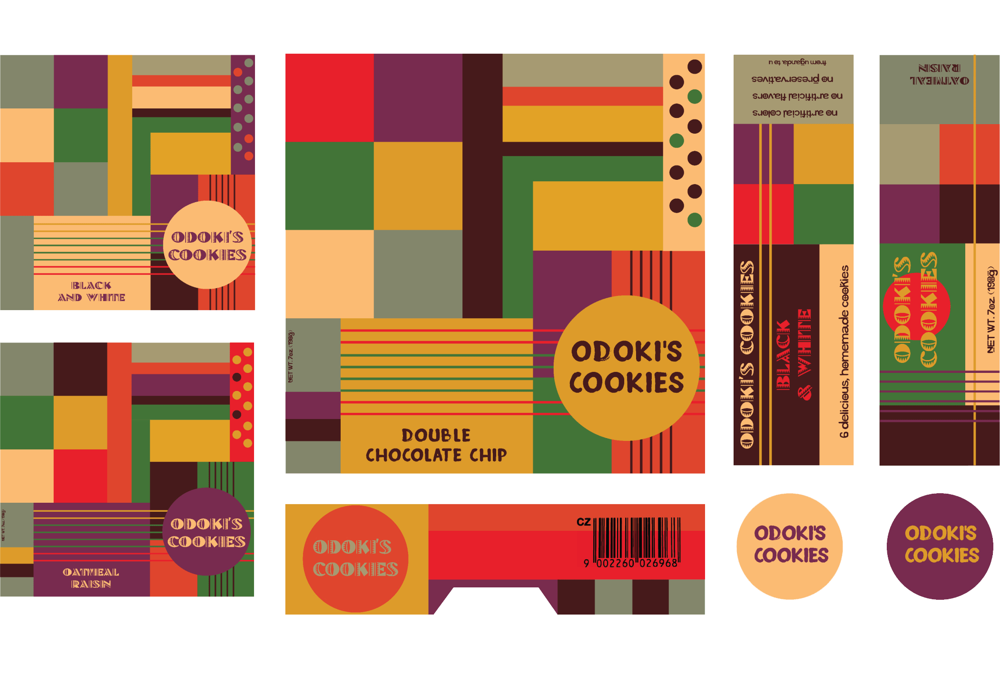
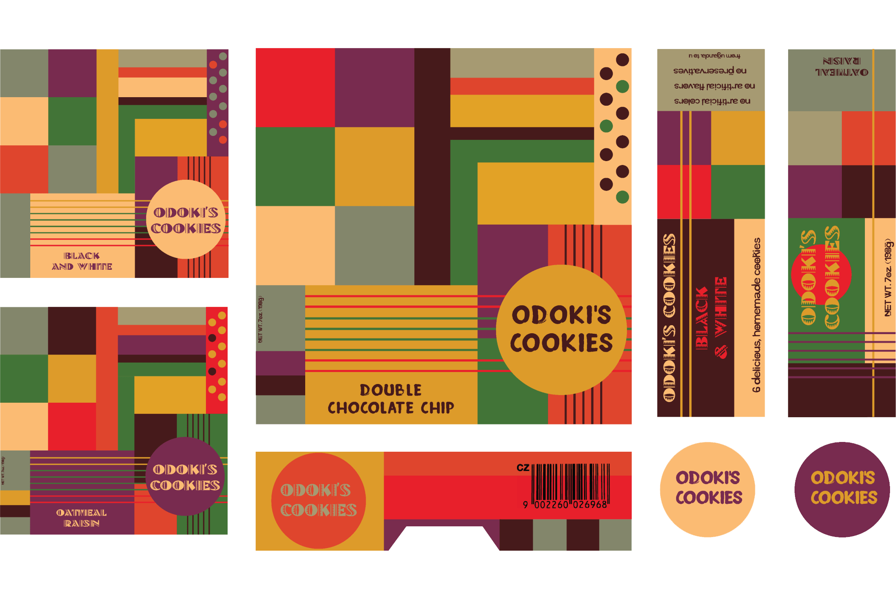

Little America
Odoki's Cookies Packaging Concept
Baby's first graphics job! Before I got my foot in the door, friend and uber-talented designer Amy Williams gave me the opportunity to design packaging for the protagonist's cookie company in our final episode of Little America. Here’s a peek at my process, from palettes and typography to counting calories and constructing crosswords.
Research
In this episode, our protagonist Beatrice starts her own cookie company featuring the recipes her father taught her back in Uganda. In designing the packaging, I wanted to honor the patterns and colors present in Ugandan art and textiles without being too overt.


Ideation
Wanting to give options, I provided a more straightforward rendition with obvious and recognizable African patterns and typography. In addition to a version with a much less literal interpretation of each. We agreed the latter was stronger and fitting for our untraditional leading lady.


Production
After dissecting and measuring a box of suitable size, I made a template plotting out dimensions and began planning the box collaterol to flesh out the design. Before merging the template and design, I revisited typography, created secondary panels, and added subtle color variations for different flavors.
 
Fabrication
After plugging in Beatrice’s backstory and some custom collaterol, I printed Odoki’s first cookie box on adhesive luster paper and slapped it on some recycled chipboard.